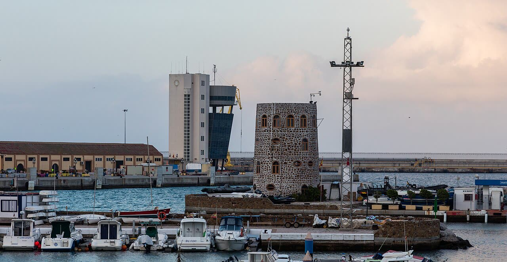

Ceuta svuota il campo migranti: chi ha l'asilo respinto torna in Marocco
Mandare via chi ha perso l'asilo è giusto, ma nessuna fonte dice quante persone c'erano nel campo né quante restano.
Redazione Contrappunto · aggiornato il 08.11.2026


Ceuta è una città autonoma spagnola in Nordafrica, sul confine con il Marocco. Il 30 e 31 luglio 2026 più di 70.000 persone sono entrate da lì in poche ore; la maggior parte è tornata in Marocco, ma migliaia sono rimaste (Euronews, elDiario.es citando l'Interno). Per alloggiarle il governo di Madrid ha aperto campi e centri, tra cui uno sul molo di Poniente, nel porto: il 5 settembre il ministero dei Trasporti ha ordinato di usare 16.000 metri quadrati del porto fino al 31 dicembre, dopo che il consiglio dell'Autorità portuale aveva votato 11 a 4 contro (El Salto, elDiario.es). Domenica 8 novembre la polizia ha cominciato a svuotarlo. Conta perché mostra cosa succede a chi è rimasto, mentre la Spagna va al voto il 29 novembre.
Vedi di più: 4 parole spiegate, cosa si racconta
Cosa si raccontaLa versione di agenzia (Europa Press, ripresa da La Vanguardia, El Mundo e Vozpópuli) è che la polizia smonta il campo perché sono arrivate le prime espulsioni: le persone arrivate il 30 e 31 luglio vanno al CATE per essere identificate e poi rinviate in Marocco, perché i termini per l'asilo sono scaduti e le domande respinte. EFE (ripresa da The Objective) racconta un trasferimento: al CATE per identificarli e poi in altri centri, con decine di rientri già avvenuti. Il giornale locale Ceuta Actualidad parla di «repliegue» dei dispositivi di emergenza. [La Vanguardia] [El Mundo] [Vozpópuli] [Infobae (EFE)] [Infobae (EFE)] [The Objective] [Ceuta Actualidad]
- CATE
- Centro de Atención Temporal de Extranjeros: il centro di El Tarajal, a Ceuta, dove le persone vengono identificate («filiazione») e dove si avviano le pratiche prima del rinvio (EFE, Ceuta Actualidad).
- CETI
- Centro de Estancia Temporal de Inmigrantes: uno dei centri di accoglienza temporanea della città, dove vanno le persone senza ordine di espulsione (Vozpópuli).
- Muelle de Poniente
- Il molo di Poniente: l'ampliamento del porto di Ceuta dove sorge il campo, accanto a una scuola e ad altre strutture come il Banco de Alimentos (Europa Press, EFE).
- Autorità portuale
- L'ente che gestisce il porto di Ceuta. Il suo consiglio, in cui pesano la città e le categorie economiche, ha votato contro il campo; il ministero dei Trasporti ha deciso lo stesso (El Salto).
- Domenica 8 novembre la Polizia Nazionale ha cominciato a svuotare il campo dei migranti nel porto di Ceuta, enclave spagnola in Nordafrica: sono persone entrate il 30 e 31 luglio.
- Vanno al CATE di El Tarajal per l'identificazione, poi chi ha avuto l'asilo respinto viene rinviato in Marocco e gli altri vanno al CETI o in altri centri. Decine sono già rientrate.
- Nessuna fonte letta dice quante persone c'erano nel campo né chi ha firmato gli ordini di espulsione.
Mandare via chi ha perso la domanda d'asilo è la regola giusta, e a Ceuta qualcosa si muove: decine di persone sono già tornate in Marocco (EFE). Ma ci sono voluti più di tre mesi dall'ingresso di fine luglio, e il campo sorge su un terreno che l'Autorità portuale aveva rifiutato di cedere. Le testate dicono «espulsioni» (Vozpópuli, Europa Press) o «trasferimenti» (EFE): nessuna dice quante persone c'erano. Uno Stato che funziona conta chi gestisce: finché il governo non dà i numeri, «espulso» e «tornato volontariamente» restano parole. [2] [3] [4] [5] [8]
La verifica punto per punto3 passaggi, 11 fonti
Qui sotto ogni cosa scritta sopra, una per una, con le fonti. Confermato: lo dice un documento originale o più fonti lette. Plausibile: lo riportano fonti serie, ma non abbiamo letto l'originale. Discordante: le fonti danno numeri diversi, e diciamo quali. Ipotesi e Opinione sono il nostro ragionamento, separato dai fatti.
Cosa è successo
Domenica 8 novembre la Polizia Nazionale ha cominciato a smantellare il campo del Muelle de Poniente: l'operazione è partita prima delle sei (EFE), con la zona transennata e di domenica per non coincidere con le lezioni della scuola vicina (Europa Press). Le persone, arrivate il 30 e 31 luglio, vanno al CATE di El Tarajal per l'identificazione; chi ha avuto la domanda d'asilo respinta passa poi all'espulsione verso il Marocco, gli altri vanno al CETI o ad altri centri (Europa Press, Vozpópuli, EFE). Decine di persone sono già tornate nel loro paese, volontariamente o dopo il rifiuto dell'asilo, e il dato ufficiale non c'è (EFE); non è detto se il campo chiuda del tutto, perché dipende dai posti negli altri centri (fonti di polizia). Nessuna fonte letta dice quante persone fossero nel campo né quante siano state trasferite: EFE dà solo 5.800 censiti nei sette siti della città, con più di 7.000 posti.
Tra le righe · espulsi o tornati
Una parte di chi lascia il campo rientra in Marocco senza un provvedimento di espulsione eseguito, e il confine tra ritorno «volontario» e forzato è sfumato.
Ragionamento: Europa Press e Vozpópuli parlano di «órdenes de expulsión»; EFE e The Objective scrivono che molti hanno scelto di tornare e altri sono rientrati dopo il rifiuto dell'asilo, «a la espera de conocer el dato oficial». Nessuna fonte distingue i due gruppi né dà i numeri, e non sappiamo da chi siano partiti gli ordini di espulsione (le fonti non lo dicono).
Il nostro punto
Rimpatriare in fretta chi non ha titolo per restare è giusto, e qui il Marocco riprende le persone. Ma il governo deve dire quante ne ha trasferite, quante rimpatriate e quante sono rimaste al CETI: senza numeri non si può giudicare se la gestione funziona.
Fonti11, tutte con il link
- La policía empieza a desmantelar el campamento de migrantes del puerto de Ceuta (testo di agenzia, 8 novembre 2026) (La Vanguardia) · consultata il 08.11.2026
- La Policía Nacional desmantela el campamento de migrantes del Puerto de Ceuta (Europa Press, 8 novembre 2026; letto solo il testo visibile, a pagamento) (El Mundo) · consultata il 08.11.2026
- Ceuta inicia el desalojo del campamento de inmigrantes tras recibir las primeras órdenes de expulsión (8 novembre 2026) (Vozpópuli) · consultata il 08.11.2026
- La policía traslada a los migrantes de un campamento temporal junto al puerto en Ceuta (EFE, 8 novembre 2026) (Infobae (EFE)) · consultata il 08.11.2026
- Decenas de migrantes desalojados del puerto de Ceuta regresan a su país (EFE, 8 novembre 2026) (Infobae (EFE)) · consultata il 08.11.2026
- Decenas de inmigrantes desalojados del puerto de Ceuta regresan voluntariamente a su país (8 novembre 2026) (The Objective) · consultata il 08.11.2026
- Desmantelamiento del campamento del Muelle de Poniente: comienzan los traslados para expulsión (8 novembre 2026) (Ceuta Actualidad) · consultata il 08.11.2026
- El Gobierno se hace con el control del puerto de Ceuta para instalar carpas de atención a migrantes (5 settembre 2026) (El Salto) · consultata il 08.11.2026
- El Gobierno toma el control del puerto de Ceuta para ubicar allí a más de un millar de migrantes (5 settembre 2026; letto solo il testo visibile) (elDiario.es) · consultata il 08.11.2026
- La Policía está desalojando el asentamiento de la playa en Ceuta (4 ottobre 2026) (Euronews) · consultata il 08.11.2026
- Abusos a menores y un campamento insuficiente en el puerto de Ceuta (20 settembre 2026) (Euronews) · consultata il 08.11.2026